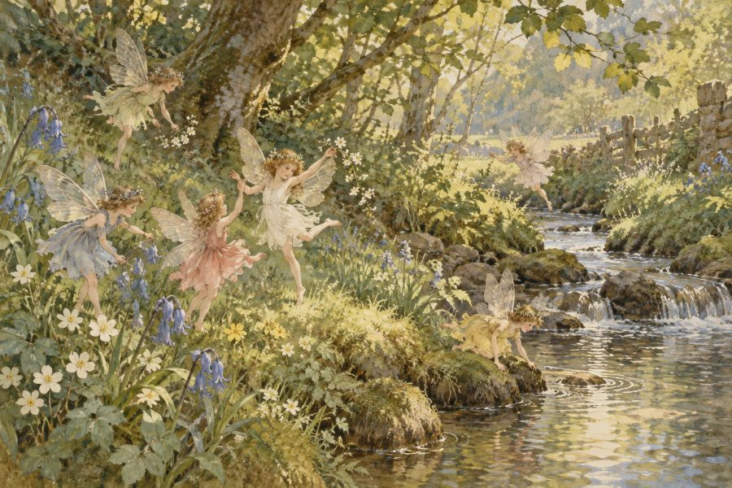
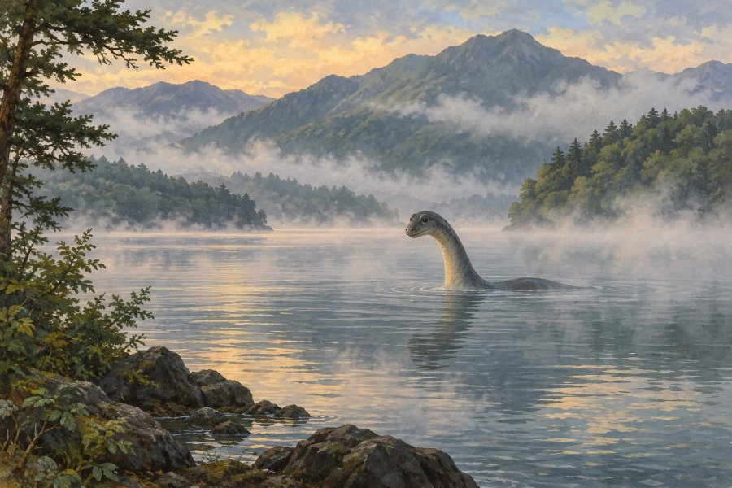

UMA（未確認生物）・オカルトの正体図鑑
チュパカブラ、イエティ、クッシーなど
UMA（ユーマ）は「未確認動物」を意味する、日本で生まれた言葉です。目撃談は多いのに、正体がはっきりしない生き物たち。八百万診断の「本当の正体」には、そんなUMAや、写真が世界を騒がせた妖精、錬金術の人造生命など、オカルトの世界の存在も登場します。
🛸 UMA・オカルトの正体
世界各地で語られてきた、なぞに満ちた存在たちです。見た目のインパクトだけでなく、伝わる話から性格を読み解いています。
コティングリー妖精／フラットウッズ・モンスター／ジャージー・デビル／イエティ／チュパカブラ／モケーレ・ムベンベ／クッシー／ホムンクルス

イギリスの心霊事件・妖精
コティングリー妖精
「少女たちが写した小川の妖精」
1917年、イギリスのコティングリー村で2人の少女が撮った「妖精の写真」。名探偵ホームズの作者コナン・ドイルまで信じたことで、世界中の話題になりました。あなたも、夢見る力で周りを巻き込む不思議な魅力の持ち主です。
日干が乙（きのと）の人の正体の候補です。
📍 ゆかりの地：コティングリー（イギリス・ウェスト・ヨークシャー）

アメリカの未確認生物・宇宙人
フラットウッズ・モンスター
「光る目をもつ3メートルの宇宙人」
1952年、アメリカのフラットウッズの丘に現れたという、身長3メートルほどの謎の存在。スペードのような形の頭と光る目で、一度見たら忘れられない姿です。あなたも、登場するだけで場の空気を変えるインパクトの持ち主です。
日干が丙（ひのえ）の人の正体の候補です。
📍 ゆかりの地：ブラクストン郡モンスター博物館（アメリカ・ウェストバージニア州）

アメリカの未確認生物・怪物
ジャージー・デビル
「松林を飛ぶ13番目の子」
アメリカ・ニュージャージー州の松林に棲むという、馬の頭とコウモリの翼をもつ怪物。ある家の13番目の子が姿を変えたものだと伝えられます。あなたも、型にはまらない自由さで人を驚かせる人です。
日干が丁（ひのと）の人の正体の候補です。
📍 ゆかりの地：パイン・バレンズ（アメリカ・ニュージャージー州）

ヒマラヤの未確認生物・雪男
イエティ
「ヒマラヤの雪山に生きる雪男」
世界一高い山々が連なるヒマラヤの雪の中で、足跡だけを残していく雪男。きびしい環境でも、自分のペースでたくましく生きています。あなたも、どんな場所でもぶれない、たくましくおおらかな人です。
日干が戊（つちのえ）の人の正体の候補です。
📍 ゆかりの地：クムジュン村（ネパール）

中南米の未確認生物・未確認生物
チュパカブラ
「夜を跳ねまわる謎のハンター」
1990年代にプエルトリコで目撃され、中南米じゅうで話題になった謎の生き物。素早く跳ねまわり、見つかる前に姿を消してしまいます。あなたも、狙いを定めたら一瞬で決める、鋭い行動力の持ち主です。
日干が庚（かのえ）の人の正体の候補です。
📍 ゆかりの地：カノバナス（プエルトリコ）

アフリカの未確認生物・未確認生物
モケーレ・ムベンベ
「川の流れをせき止める密林の巨獣」
アフリカ・コンゴの密林の川に棲むという、首の長い巨大な生き物。その名は「川の流れをせき止めるもの」という意味だと伝えられます。あなたも、大きな流れの中でもどっしり構える、スケールの大きな人です。
日干が壬（みずのえ）の人の正体の候補です。
📍 ゆかりの地：テレ湖（コンゴ共和国）

日本の未確認生物・未確認生物
クッシー
「屈斜路湖に浮かぶ恥ずかしがりの怪獣」
北海道の屈斜路湖で1970年代に目撃され、日本中で話題になった湖の怪獣。たまに顔を出しては、またそっと湖に戻っていきます。あなたも、恥ずかしがりなのに、なぜかみんなに愛される人です。
日干が癸（みずのと）の人の正体の候補です。
📍 ゆかりの地：屈斜路湖（北海道弟子屈町）

錬金術の伝承・人造生命
ホムンクルス
「フラスコの中で生まれた小さな賢者」
錬金術師がフラスコの中でつくり出すという小さな人。生まれながらにあらゆる知識を持つものの、フラスコの外では生きられないと伝えられます。あなたも、限られた世界の中で知恵を深く磨く人です。
日干が癸（みずのと）の人の正体の候補です。
📍 ゆかりの地：ザルツブルク（オーストリア）
ツチノコ、ビッグフット、ネッシーなどのUMAは、「別の世界の姿」の都市伝説として登場します。妖怪・怪異・都市伝説図鑑もどうぞ。